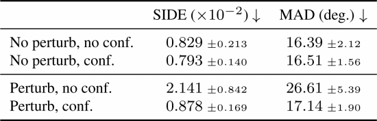
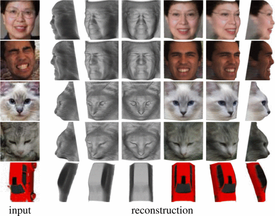
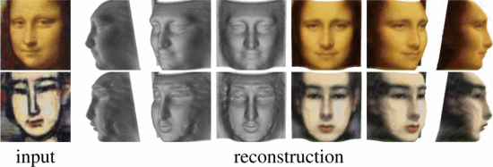

<!DOCTYPE html>
<html lang="en">

<head>
  <meta charset="utf-8" />
  <meta name="viewport" content="width=device-width, initial-scale=1.0, maximum-scale=1.0, user-scalable=no" />

  <title>Unsupervised Learning of Probably Symmetric Deformable 3D Objects</title>
  <link rel="shortcut icon" href="./favicon.ico" />
  <link rel="stylesheet" href="./dist/reveal.css" />
  <link rel="stylesheet" href="assets/theme/all.css" id="theme" />
  <link rel="stylesheet" href="./css/highlight/zenburn.css" />
  <!-- Tailwind -->
  <script src="https://cdn.tailwindcss.com"></script>
</head>

<body>
  <div class="reveal">
    <div class="slides"><section  data-markdown><script type="text/template">
# Unsupervised Learning of Probably Symmetric Deformable 3D Objects

- Author: Shangzhe Wu, Christian Rupprecht, Andrea Vedaldi  <!-- .element: class="text-3xl leading-normal" -->
- Published in: 2020 IEEE/CVF Conference on Computer Vision and Pattern Recognition (CVPR) <!-- .element: class="text-3xl leading-normal" --></script></section><section  data-markdown><script type="text/template">## Outline

- Introduction  <!-- .element: class="text-4xl leading-normal" -->
- Proposed Methods  <!-- .element: class="text-4xl leading-normal" -->
- Experimental results  <!-- .element: class="text-4xl leading-normal" -->
- Conclusions  <!-- .element: class="text-4xl leading-normal" --></script></section><section ><section data-markdown><script type="text/template">## Introduction

- 從一張影像學習 3D 物件
- 沒有事先的 2D 圖片標註或 3D 模型，消除了影像標註的瓶頸。
- 用單視角的影像訓練，產生一個網路，該網路可以憑一張影像預測物件的 3D 形狀。

<div>
  <video controls="controls" autoplay="autoplay" loop class="w-1/2 mx-auto">
      <source src="attachments/2022-03-19-06-41-00.mp4">
  </video>
</div></script></section><section data-markdown><script type="text/template">## Introduction

- 假設影像中的物體是對稱的，可以透過簡單的鏡像獲得虛擬的第二個視角，以此進行 3D 重建。
- 真實的物體通常不完全對稱
  - 「頭髮的樣式」或「人的表情」使形狀不對稱。
  - 「貓臉的紋路」使顏色不對稱。
  - 「光線的角度」使光影不對稱。</script></section><section data-markdown><script type="text/template">## Introduction

- 提出的方法基於 AutoEncoder（非監督式）

</script></section><section data-markdown><script type="text/template">## Introduction

</script></section></section><section ><section data-markdown><script type="text/template">## Proposed methods

- 制定 AutoEncoder，將影像分為 4 個因子的組合
  - depth 深度：
    - 物體輪廓的深度
  - albedo 反照率：
    - 物體的顏色，例如紋路。
  - viewpoint 視角：
    - 物體的角度，例如頭往左擺。
  - illumination 光照：
    - 物體的光線角度，例如燈從左往右照。</script></section><section data-markdown><script type="text/template">## Proposed methods

- 訓練 4 個因子，使得經過組合後，能得到輸入影像。
- 4 個因子個別在 3D 上代表不同的意義，因此可以透過這些因子推論出可能的 3D 模型。</script></section><section data-markdown><script type="text/template">## Proposed methods

</script></section></section><section ><section data-markdown><script type="text/template">## Experimental results

- 資料集
  - 人臉資料集
  - 貓資料集
  - 汽車資料集</script></section><section data-markdown><script type="text/template">## Experimental results

- 指標
  - SIDE (scale-invariant depth error)
    - 比較 depth map 上，「真實深度圖」與「預測深度圖」的差異。
    - 類似 RMSE，越小越好。
  - MAD (mean angle deviation)
    - 「真實深度」與「預測深度」的平均角度偏差。</script></section><section data-markdown><script type="text/template">## Experimental results <!-- .element: class="mb-0" -->
### Comparison with Baselines


- (1) 監督式的方法。 <!-- .element: class="text-lg mb-0" -->
- (2) a constant uniform depth map. <!-- .element: class="text-lg mb-0" -->
- (3) a constant depth map obtained by averaging all ground-truth depth maps in the test set. Proposed methods 比 (2), (3) 要好，同時接近監督式的效果。 <!-- .element: class="text-lg mb-0" -->
</script></section><section data-markdown><script type="text/template">## Experimental results <!-- .element: class="mb-0" -->
### Ablation Study


- (2) 取消反照率的翻轉。 <!-- .element: class="text-lg mb-0" -->
- (3) 取消深度圖的翻轉。 <!-- .element: class="text-lg mb-0" -->
- (4) 取消光照角度的計算。 <!-- .element: class="text-lg mb-0" -->

> 一次移除一個部份，評估模型的結果。 <!-- .element: class="text-lg" --></script></section><section data-markdown><script type="text/template">## Experimental results <!-- .element: class="mb-0" -->
### Asymmetric Perturbation


<div class="grid grid-cols-3">
  <div class="col-span-2">
    
  </div>
  <div>
    <ul class="text-lg">
      <li>為了驗證 confidence map 對非對稱影像的幫助，使用 patch 破壞影像的「對稱性」進行訓練，測試對模型結果的影響。</li>
      <li>有加入 confidence map 的不會受到擾動的影響，而沒有使用該方法的普通模型會遭到破壞。</li>
    </ul>
  </div>
</div></script></section><section data-markdown><script type="text/template">## Experimental results <!-- .element: class="mb-0" -->
### Qualitative Results

<div class="grid grid-cols-3">
  <div class="col-span-2">
    
  </div>
  <div>
    
    <ul class="text-lg">
      <li>即使極端的表情，也會保持鼻子、眼睛、嘴巴等精細細節。</li>
      <li>在泛化性上，臉部繪圖與卡通仍可以很好的推論，即使從未見過這樣的影像。</li>
    </ul>
  </div>
</div></script></section><section data-markdown><script type="text/template">## Experimental results <!-- .element: class="mb-0" -->
### Symmetry and Asymmetry Detection


- (a) 即使外觀不對稱，仍可以重建物件「真實」的對稱平面。 <!-- .element: class="text-lg mb-0" -->
- (b) 使用 confidence map 檢測和可視化，紅色代表不對稱。 <!-- .element: class="text-lg mb-0" --></script></section><section data-markdown><script type="text/template">## Experimental results <!-- .element: class="mb-0" -->
### Qualitative Comparison

 <!-- .element: class="w-4/6" -->

- [45] 很難產生 3D 形狀，並且形狀不自然。 <!-- .element: class="text-lg mb-0" -->
- [52] 使用 GAN，從雜訊中產生高畫質 3D 人臉。 <!-- .element: class="text-lg mb-0" -->

> Proposed methods 品質比這兩種方法都高。 <!-- .element: class="text-lg" --></script></section></section><section  data-markdown><script type="text/template">## Conclusions

- 提出一種方法可以從單視角影像學習物件的 3D 模型建模。
- 類似於 AutoEncoder，是基於非監督式學習的訓練。
- 證明「對稱性」和「照明」是物件形狀的重要參考，有助於模型的收斂。
- 未來工作，對於更複雜的物件，可以擴展模型，使用多視角圖或體素圖 (Voxel map) 來進行。
</script></section></div>
  </div>

  <script src="./dist/reveal.js"></script>

  <script src="./plugin/markdown/markdown.js"></script>
  <script src="./plugin/highlight/highlight.js"></script>
  <script src="./plugin/zoom/zoom.js"></script>
  <script src="./plugin/notes/notes.js"></script>
  <script src="./plugin/math/math.js"></script>
  <script>
    function extend() {
      var target = {};
      for (var i = 0; i < arguments.length; i++) {
        var source = arguments[i];
        for (var key in source) {
          if (source.hasOwnProperty(key)) {
            target[key] = source[key];
          }
        }
      }
      return target;
    }

    // default options to init reveal.js
    var defaultOptions = {
      controls: true,
      progress: true,
      history: true,
      center: true,
      transition: 'default', // none/fade/slide/convex/concave/zoom
      plugins: [
        RevealMarkdown,
        RevealHighlight,
        RevealZoom,
        RevealNotes,
        RevealMath
      ]
    };

    // options from URL query string
    var queryOptions = Reveal().getQueryHash() || {};

    var options = extend(defaultOptions, {"transition":"none","controls":true,"progress":true,"history":true,"center":false,"slideNumber":true,"mouseWheel":true,"transitionSpeed":"fast"}, queryOptions);
  </script>


  <script>
    Reveal.initialize(options);
  </script>
</body>

</html>